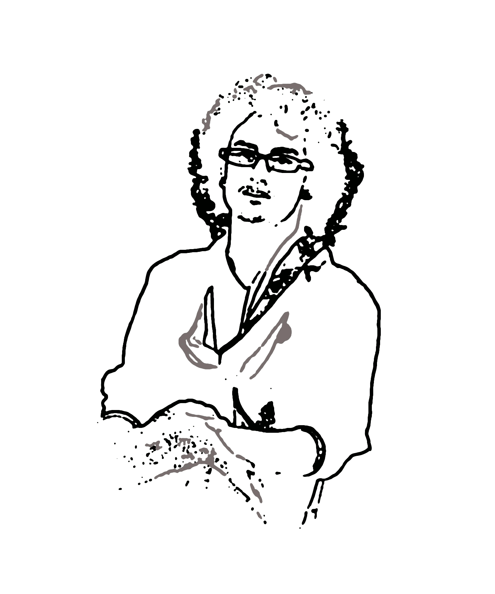
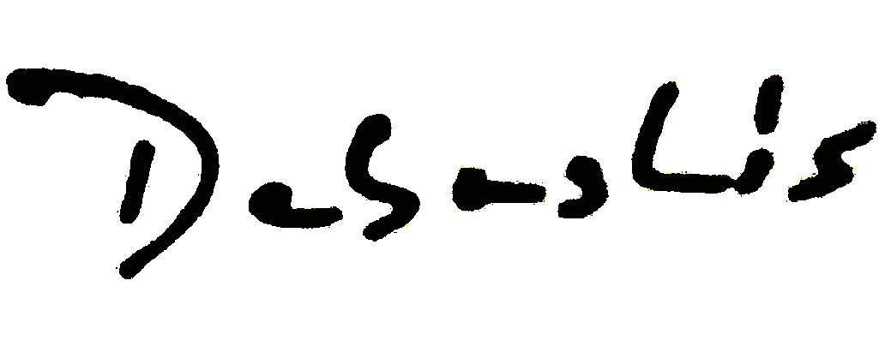

Hello, world ! My name is Debashis Barman. I'm a B. Tech. student in Computer Science and Engineering in Assam Don Bosco University. I work as a freelance web designer and developer. I specialize in minimalist and mobile friendly development. Some of my projects are available on Github and Behance. 
My interests lie primarily on computer programming, web designing and development, internet and android application development. I’m a fan of all things creative and I can say that I’m happiest when brainstorming and sketching new ideas. Once I was a prolific writer, now the art is dying.
I'm a passionate programmer with some knowledge in C, C++, Java, Android, Assembly, Shell and Python. I love writing HTML, XML, CSS, Bootstrap, Javascript, jQuery, Markdown and PhP. My recent projects include PhD Project Management software, Manipulation Detection Code generator, Kathamo CSS framework, an official website for Knowledge Exchange Network, a personal website for Dr. Surajit Barman, an android based application for Assam Don Bosco University. Some of my ongoing projects include the official website for North Kamrup College, an official website for Prajyukttam 2015 along with its official android application. I'm also working on a project for crime scene detection through video surveillance.
You can follow me on Twitter and Tumblr and learn about stuff I find interesting, as well as some articles I decide to write down, projects I’m working on and drawings that I occasionally find the time to make.
For more information, please go through my curriculum vitae (PDF).
Thank you.

Debashis BarmanContact : +91 88 76 342995
Email : deb.dbuniversity@gmail.com